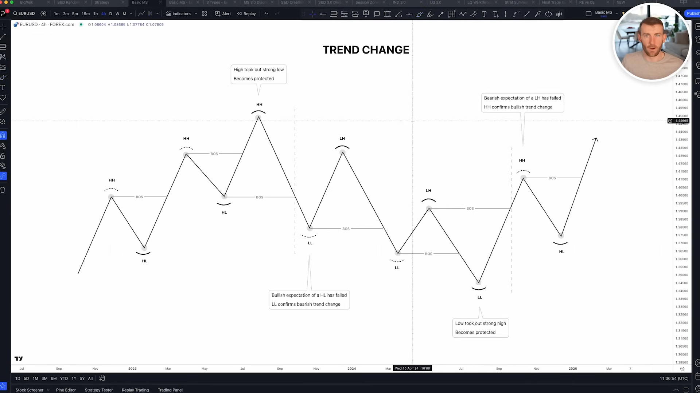
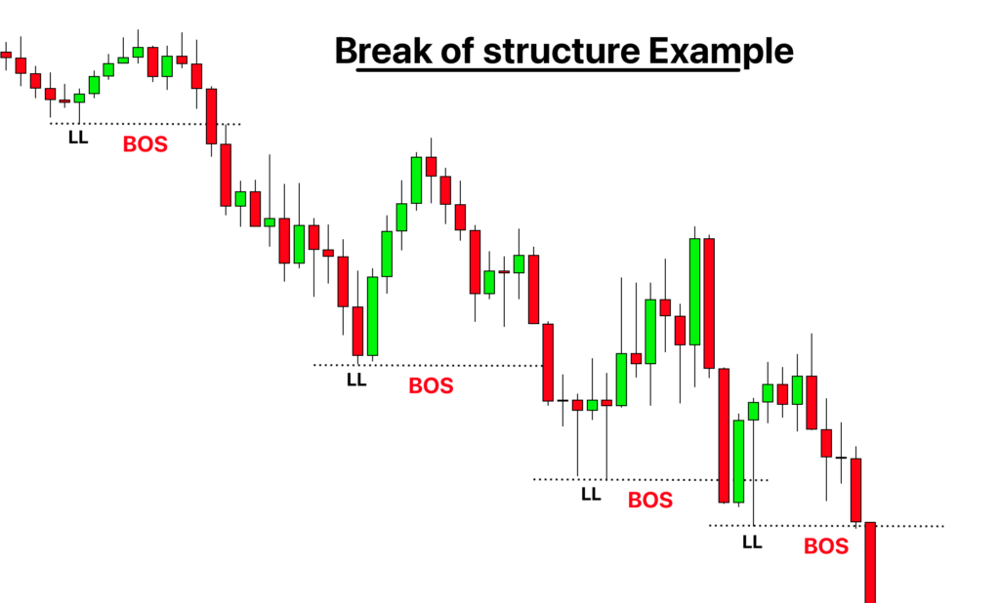
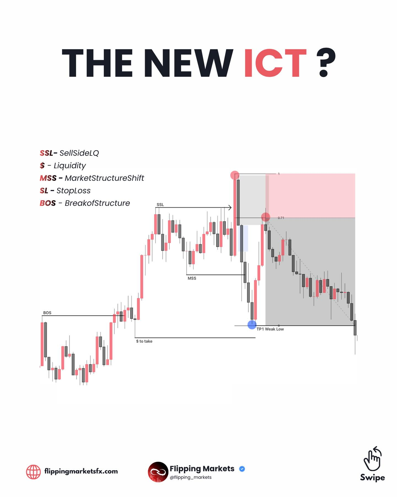

Structure Context - BoS, P/D Range, Pullback, Attempt Memory
00 Core Concept
Structure Context detects Break of Structure and owns the market range state needed for Premium / Discount, pullback phase, and structural attempt facts.
PE registry / wick range condition met -> structure lifecycle transition -> timestamped SC / phase / attempt event -> current StructureSnapshot -> Fusion current-truth snapshot -> Evidence Compiler candidate, if useful to Layer 4

SC events live in Layer 3 because BoS needs remembered levels. Layer 2 remains primitive and causal: CE for FVG, PE for pivots. SC is event-shaped, but its detection depends on context memory.
Step 1 · Layer 2 emits primitive PE / CE Layer 2
PE03/PE04 or PE05/PE06 provide confirmed structure points. CE02 can create S/D zones that later confirm pullback.
Step 2 · Structure Context stores lifecycle state Layer 3
State includes warmup registry, wick-defined range, bias, phase, recent levels, last SC, and structure attempts.
Step 3 · Snapshot is projected downstream Fusion / Evidence Compiler
Layer 4 should read compiled context, not rebuild structural meaning from raw PE/CE streams.
01 Lifecycle
The engine has one warmup state and two live phases. neutral is warmup-only and is never re-entered after the first SC fires.
neutral warmup registry accepts selected PE tier first SC crosses warmup gate open bias is bullish or bearish wick range and P/D are live extension side updates every bar pullback_confirmed ITR or SD zone confirms peak/trough timing wick range stays fixed waits for continuation BoS or ChoCh
A bias flip transitions directly to open with the opposite bias. Structure does not decide inducement versus real reversal; Layer 4 owns that interpretation.
Range lifecycle
SC01 fires -> bullish range opens -> range_low = wick floor -> range_high = live wick HH while price extends -> P/D midpoint = midpoint(range_low, range_high) SC02 fires -> bearish range opens -> range_high = wick ceiling -> range_low = live wick LL while price extends -> P/D midpoint = midpoint(range_low, range_high)
02 Registry vs Range
The most important resolved ambiguity: registry levels and range boundaries are different things.
registry_high / registry_low warmup-only selected PE levels bootstrap the first SC event stop driving SC after warmup range_high / range_low post-warmup wick-defined price boundaries drive BoS, ChoCh, P/D, and live range projection pullback_confirmed_by timing confirmation only values: itr | sd_zone | null
Selected PE tier feeds warmup registry structure.tier
structure.tier = "itr" PE03 / PE04 enter registry SC01 / SC02 fire structure.tier = "ltr" PE05 / PE06 enter registry SC03 / SC04 fire
STR never enters the structure registry. ITR is the default. LTR is the fallback if ITR proves too fast.
Warmup registry uses most recent level only warmup
In a staircase, the most recently registered selected-tier high or low is the active warmup ceiling/floor. Earlier intermediate levels are internal structure and expire silently when the newest one is broken.
Post-warmup range uses wicks only range
After first SC, newly confirmed PE levels can confirm pullback phase, but they do not overwrite range high or range low. The active price range is wick-defined.
03 BoS Detection
BoS is close-only. Wick through a level is liquidity behavior, not a structural break.

Warmup detection
structure.tier = itr: SC01 itrBosUp if close > registry_high.price SC02 itrBosDown if close < registry_low.price structure.tier = ltr: SC03 ltrBosUp if close > registry_high.price SC04 ltrBosDown if close < registry_low.price
Post-warmup detection
bullish context: continuation: phase == pullback_confirmed and close > range_high ChoCh / flip: close < range_low bearish context: continuation: phase == pullback_confirmed and close < range_low ChoCh / flip: close > range_high
Formal close-only condition:
$$ SC_{up} \iff close_t > active\_high \qquad SC_{down} \iff close_t < active\_low $$P/D ratchet reset and anchor recording
P/D range is dynamic current truth. It ratchets on the extension side during open phase, then resets only when an SC lifecycle transition fires. The anchor sequence is historical memory and should record swing points at confirmation / reset moments, not every wick ratchet.
bullish bootstrap: first SC up -> confirm anchored low from warmup wick floor -> open anchor high range -> start bullish P/D range bullish pullback_confirmed: -> confirm anchored high from extension extreme -> open anchor low candidate range bullish continuation BoS: close > range_high -> ratchet reset -> confirm anchored low from tracked pullback low -> open anchor high range bullish pullback_confirmed -> ChoCh: close < range_low -> ratchet reset into bearish context -> promote anchored high as reversal ceiling -> open anchor low range
bearish bootstrap: first SC down -> confirm anchored high from warmup wick ceiling -> open anchor low range -> start bearish P/D range bearish pullback_confirmed: -> confirm anchored low from extension extreme -> open anchor high candidate range bearish continuation BoS: close < range_low -> ratchet reset -> confirm anchored high from tracked pullback high -> open anchor low range bearish pullback_confirmed -> ChoCh: close > range_high -> ratchet reset into bullish context -> promote anchored low as reversal floor -> open anchor high range
04 Pullback Confirmation
Pullback confirmation says the extension likely peaked or troughed. It does not change the P/D price range.
bullish: PE03 confirms at extreme -> pullback_confirmed, confirmed_by=itr supply zone in premium -> pullback_confirmed, confirmed_by=sd_zone bearish: PE04 confirms at extreme -> pullback_confirmed, confirmed_by=itr demand zone in discount -> pullback_confirmed, confirmed_by=sd_zone
ITR confirmation _confirm_pullback_from_itr
In bullish bias, the selected high PE event confirms pullback. In bearish bias, the selected low PE event confirms pullback. This is timing context only.
SD zone confirmation _confirm_pullback_from_sd
A bullish pullback can be confirmed by a supply zone above the P/D midpoint. A bearish pullback can be confirmed by a demand zone below the midpoint.
No resolving phase phase model
pullback_confirmed persists until the next continuation BoS or ChoCh. Later same-leg ITR/SD signals are ignored.

05 Snapshot Contract
The snapshot is the structure surface consumed by Snapshot Normalizer, Fusion, Evidence Compiler, and later Layer 4.
StructureSnapshot: tier bias = neutral | bullish | bearish phase = neutral | open | pullback_confirmed range_high range_low pd_midpoint range_position_pct pd_value_pct confirmed_by = itr | sd_zone | null confirmed_zone_id pullback_confirmed_ts last_sc recent_itr_levels latest_itr_high latest_itr_low structure_attempt ltf_structure_attempt structure_anchor_sequence recent_structure_anchor_points structure_anchor_probe phase_start_ts range_high_ts range_low_ts
Structure anchor sequence
Structure Context creates anchor-point records when swing points become semantically confirmed. The current State Store implementation is the bounded memory inside StructureEngine, exposed through the structure snapshot. Orderflow consumes this as structure_anchor_sequence plus structure_anchor_probe; the P/D snapshot alone is not enough to provide pivot alternation.
StructureAnchorPoint: point_id timeframe side = high | low role = range_origin | extension_extreme | reversal_ceiling | reversal_floor price timestamp confirmed_at source_transition = SC01 | SC02 | SC03 | SC04 | pullback_confirmed source_event_id State Store: structure_anchor_sequence = last 8 confirmed anchors recent_structure_anchor_points = alias for snapshot readers structure_anchor_probe = live +1 unconfirmed probe Orderflow read: 8 confirmed anchor points + 1 current live probe = 9-point structure orderflow input
Anchor probe
bullish open: probe = live range_high side = high role = extension_probe bullish pullback_confirmed: probe = tracked pullback_low side = low role = pullback_probe bearish open: probe = live range_low side = low role = extension_probe bearish pullback_confirmed: probe = tracked pullback_high side = high role = pullback_probe
SC event payload
{
"eventCode": "SC01",
"eventName": "itrBosUp",
"eventGroup": "SC",
"eventTimestamp": "2024-08-28T00:00:00Z",
"levelTier": "itr",
"levelTimestamp": "2024-08-24T00:00:00Z",
"levelPrice": 1.1050,
"levelSide": "high",
"breakDirection": "up",
"biasFlip": false,
"choch": false
}
choch is true when the close-based structure event flips bias. Consumers can use eventTimestamp to order the confirmed ChoCh against other Layer 3 evidence.ChoCh chronology contract
Structure owns only the confirmed event. It does not decide whether the event confirms a liquidity reclaim, supports Phase D, or occurred inside a valid Layer 4 origin.
last_sc.choch last_sc.breakDirection last_sc.eventTimestamp last_sc.levelPrice last_sc.biasFlip Evidence Compiler may qualify: last_sc.choch == true last_sc.breakDirection is counter to HTF direction last_sc.eventTimestamp >= liquidity.reclaimed_at
06 Algorithm
The current engine runs once per completed bar and returns zero or more SC events.
# structureEngine.py - StructureEngine.on_bar() def on_bar(self, row, pivot_events, ce02_events, bar_result): bar_high = row["high"] bar_low = row["low"] bar_close = row["close"] bar_ts = row.name # 1. Ingest selected PE tier into recent level memory. for pe in pivot_events: if pe.event_code == self._pe_high_code: self._remember_structure_level(pe, "high") self._registry_high = registry_level_from(pe) elif pe.event_code == self._pe_low_code: self._remember_structure_level(pe, "low") self._registry_low = registry_level_from(pe) if self._warmup_complete: self._maybe_open_pro_attempt_from_break(bar_high, bar_low, bar_ts) # 2. Warmup: registry-based BoS. if not self._warmup_complete: self._extend_range_high(bar_high, bar_ts) self._extend_range_low(bar_low, bar_ts) return maybe_emit(self._bos_warmup(bar_close, bar_ts, bar_high, bar_low)) # 3. Live: wick range + pullback lifecycle. if self._phase == "open": self._extend_active_side(bar_high, bar_low, bar_ts) elif self._phase == "pullback_confirmed": self._track_pullback_extreme(bar_high, bar_low, bar_ts) self._update_structure_attempt(bar_high, bar_low, bar_close, bar_ts) sc = self._bos_range(bar_close, bar_ts, bar_high, bar_low) if sc: return [sc] if self._phase == "open": self._confirm_pullback_from_itr(pivot_events) self._confirm_pullback_from_sd(bar_result.created) if pullback_confirmed: self._record_structure_anchor(extension_side, role="extension_extreme") return []
# warmup: close against selected registry level
if registry_high and close > registry_high.price:
warmup_complete = True
start_bullish(range_low=running_wick_low, bar_high=bar_high)
record_anchor(low, role="range_origin")
emit SC01 or SC03
if registry_low and close < registry_low.price:
warmup_complete = True
start_bearish(range_high=running_wick_high, bar_low=bar_low)
record_anchor(high, role="range_origin")
emit SC02 or SC04
# post-warmup: close against wick-defined range
if bias == "bullish":
if close < range_low:
record_or_promote_anchor(high, role="reversal_ceiling")
start_bearish(prior_high=range_high, bar_low=bar_low)
emit SC02 or SC04 with biasFlip=True
elif phase == "pullback_confirmed" and close > range_high:
record_anchor(low, role="range_origin")
start_bullish(range_low=pullback_low, bar_high=bar_high)
emit SC01 or SC03
if bias == "bearish":
if close > range_high:
record_or_promote_anchor(low, role="reversal_floor")
start_bullish(prior_low=range_low, bar_high=bar_high)
emit SC01 or SC03 with biasFlip=True
elif phase == "pullback_confirmed" and close < range_low:
record_anchor(high, role="range_origin")
start_bearish(range_high=pullback_high, bar_low=bar_low)
emit SC02 or SC04
# pro-direction attempt facts
if bias == "bullish":
trigger = latest_itr_high
anchor = latest_itr_low
if bar_high > trigger.price:
open_attempt(direction="bullish", anchor=anchor)
if attempt.active and bar_low < anchor.price:
attempt.status = "failed"
attempt.failure_reason = "traded_below_itr_low"
if bias == "bearish":
trigger = latest_itr_low
anchor = latest_itr_high
if bar_low < trigger.price:
open_attempt(direction="bearish", anchor=anchor)
if attempt.active and bar_high > anchor.price:
attempt.status = "failed"
attempt.failure_reason = "traded_above_itr_high"
07 Config
The structure engine reads structure.tier. Pivot event computation must enable the tier being selected.
# ultrab/src/ultrab/replayer/config.yaml pivot_events: enabled: true mode: conservative str_bars: 2 compute: str: true itr: true ltr: true structure: enabled: true tier: "itr" # "itr" default, or "ltr" anchor_sequence_limit: 8 dual_display: dual
# structureEngine.py - StructureEngine.__init__()
raw_tier = str(config.get("tier", "itr")).lower()
self._tier = "ltr" if raw_tier == "ltr" else "itr"
self._recent_level_limit = max(1, int(config.get("recent_level_limit", 20)))
self._structure_anchor_limit = max(
1,
int(config.get("anchor_sequence_limit", config.get("structure_anchor_limit", 8))),
)
if self._tier == "itr":
self._pe_high_code = "PE03"
self._pe_low_code = "PE04"
self._sc_up_code = "SC01"
self._sc_dn_code = "SC02"
else:
self._pe_high_code = "PE05"
self._pe_low_code = "PE06"
self._sc_up_code = "SC03"
self._sc_dn_code = "SC04"
09 Open Issues · Edge Cases · Next Milestone
Cold start. The first SC depends on replay warmup history. The decision is to replay enough recent bars and let the state self-correct chronologically.
STR BoS and sweeps. STR BoS is reserved but not implemented. Wick-through sweeps are liquidity context, not structure breaks.
ITR too fast. Switch structure.tier to ltr so SC03/SC04 replace SC01/SC02 as the structural driver.
Legacy Structural Attempt Facts. This is no longer an active Structure issue. The replacement language belongs to Orderflow / Snapshot Normalizer projection: pressure, disruption, ChoCh monitor, decision point, protected anchor, and reversal / inducement resolution.
Phase E Orderflow language. This is no longer an active Structure issue. Phase E should be qualified by Evidence Compiler using compact Orderflow / Structure / Liquidity context, then interpreted by Layer 4.
Structure anchor sequence store. Structure now records confirmed anchors in bounded State Store memory and exposes structure_anchor_sequence, recent_structure_anchor_points, and structure_anchor_probe for Orderflow integration.
Archived attempt fact shape legacy
pro-direction ITR trigger traded through attempt has protected opposite-side ITR anchor price later trades through that anchor attempt.status = failed bullish: trigger = latest PE03 / ITR high anchor = latest PE04 / ITR low starts = bar_high > trigger.price fails = bar_low < anchor.price reason = traded_below_itr_low bearish: trigger = latest PE04 / ITR low anchor = latest PE03 / ITR high starts = bar_low < trigger.price fails = bar_high > anchor.price reason = traded_above_itr_high